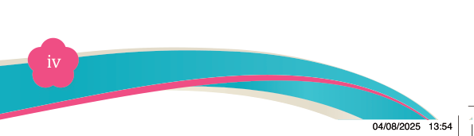
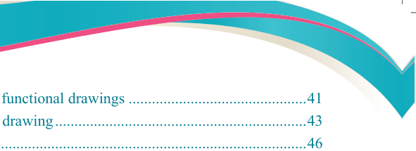

Fine Art for Secondary Schools

iv


Student’s Book Form Two
Procedures for creating simple functional drawings..............................................41
Principles of simple functional drawing.................................................................43
Categories of perspective........................................................................................46
Chapter Four
Simple functional painting....................................................................64
Concept of simple functional painting....................................................................64
Types of simple functional painting ......................................................................65
Significance of simple functional painting.............................................................66
Technique of simple functional painting ...............................................................66
Procedures for creating simple functional painting ...............................................71
Chapter Five
Simple functional monoprints...............................................................79
Concept of simple functional monoprints...............................................................79
Significance of simple functional monoprints........................................................79
Types of simple functional monoprints..................................................................81
Characteristics of simple functional monoprints....................................................84
Procedure for creating simple functional monoprints............................................86
Techniques used to create simple functional monoprints ......................................89
Approaches to analysing simple functional monoprints.......................................101
Glossary................................................................................................104
Bibliography.........................................................................................105

04/08/2025 13:54